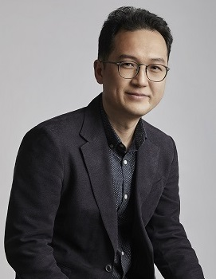
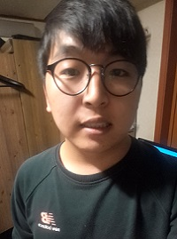
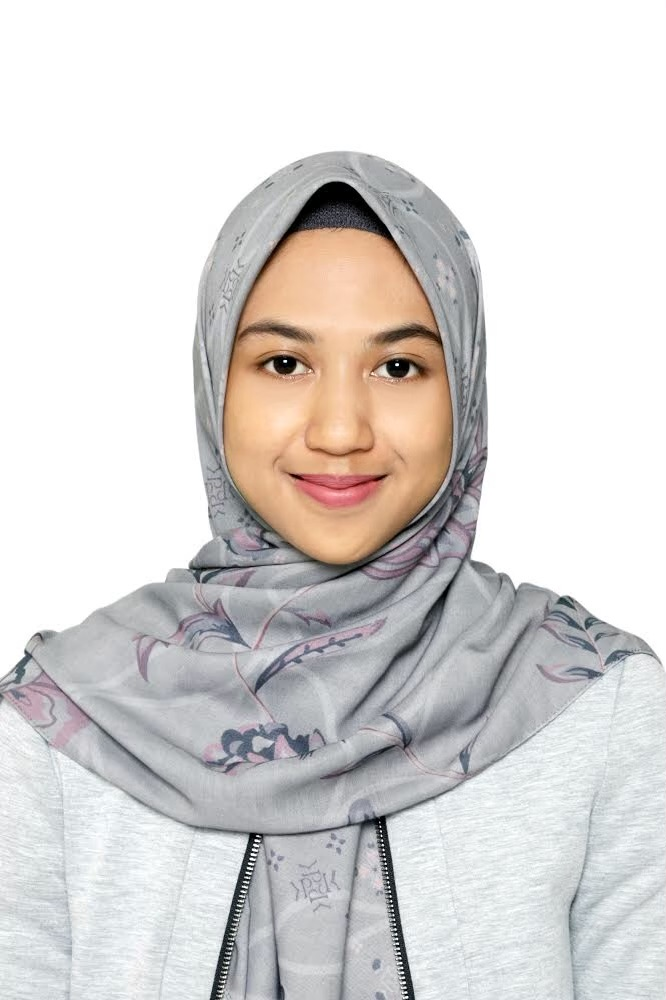
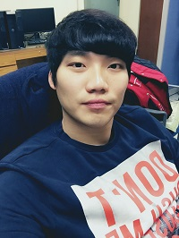
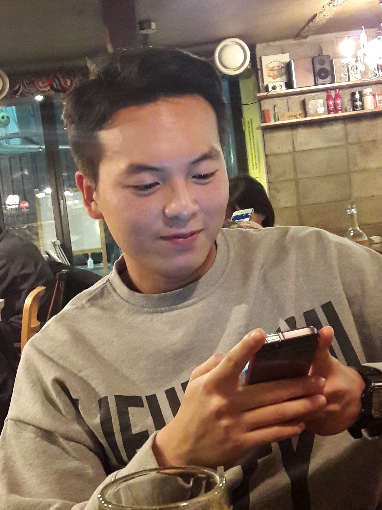

Lab. Leader
|  | Sangyoung Son, Ph.D
|

Current Members
Ph.D/MS-Ph.D Course
|  | Sooncheol Hwang
|
 (Since Spring 2017)
(Since Spring 2017) Xiaojuan Qian
|
 (Since Fall 2019)
(Since Fall 2019) |  | Asrini Chrysanti
|
 (Since Spring 2021)
(Since Spring 2021)
Master Course
Junsoo Noh
|
Past Members
|  | Chilwoo Lee (MS. 2018)
|
Jung-A Yang (Post-Doc, 2018-2019)
|
|  | Yongsu Na (MS, 2019)
|
Byoungjoon Na
|